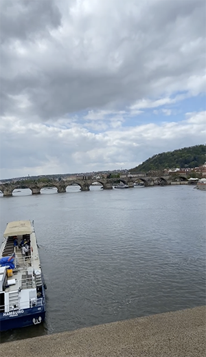
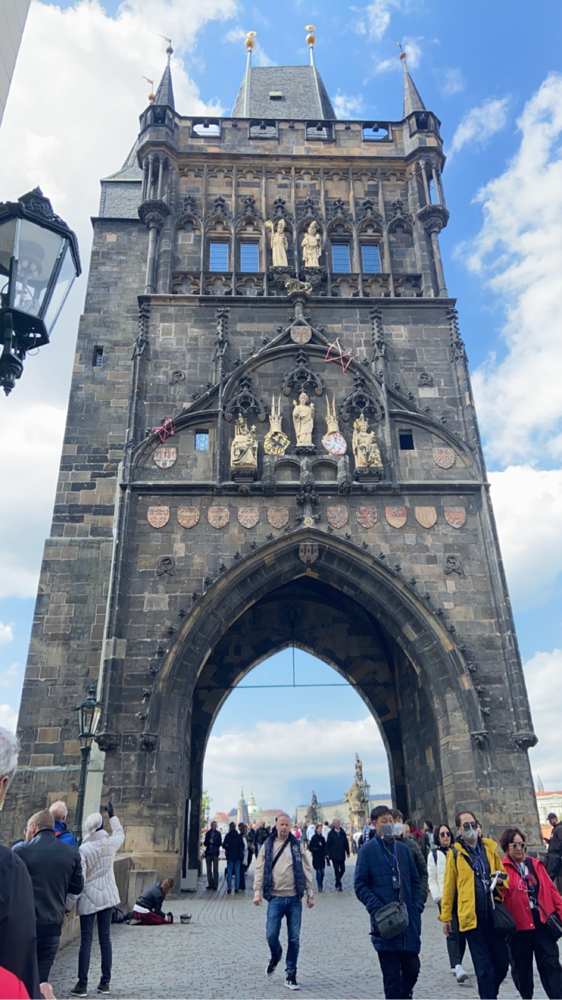
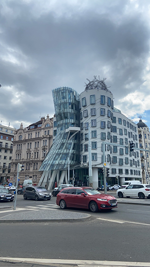
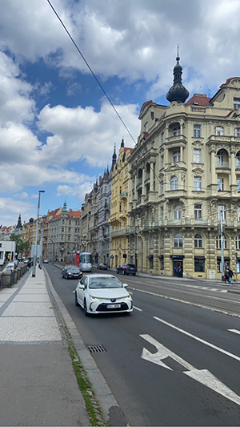
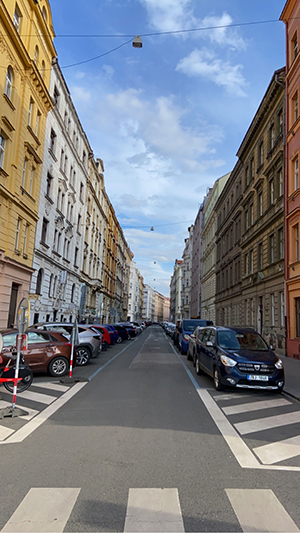
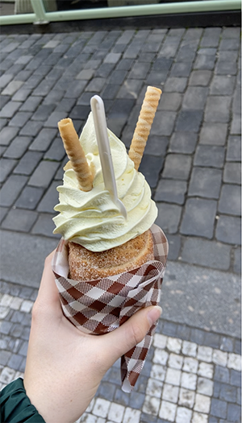

De plekken waar je gewoon even langs geweest moet zijn voor je weer vertrekt zijn:


Charles bridge, is een beroemde brug over de Vltava (Moldau) in Praag. De brug is 516 meter lang en bijna 10 m breed. Op de brug staan 30 standbeelden. Dus echt een kijkje waard.
The dancing house, Het gebouw staat op een opvallende plaats aan de rivier de Moldau, waar voordien een gebouw had gestaan dat tijdens de Tweede Wereldoorlog werd vernietigd. De bouw van het Dansende Huis begon in 1994 en werd afgerond in 1996. Maar het is leuk om er even te kijken, zo apart is het. Het gebouw staat scheef. Daar in de buurt heb je ook prachtige architectuur van de huizen. Ook het kijken waard.




Ook wat een aanrader is, is het ijs daar. Je krijgt een versgebakken hoorntje met een smaak naar keuze, vulling naar keuze en vervolgens ook een ijssoort als topping. Dit is echt het proberen waard, maar doe dit niet op een volle maag.